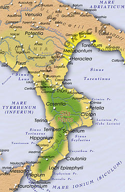

(Isla de Samos, actual Grecia, h. 572 a.C. - Metaponto, hoy desaparecida, actual Italia, h. 497 a.C.) Filósofo y matemático griego. Aunque su nombre se halla vinculado al teorema de Pitágoras y la escuela por él fundada dio un importante impulso al desarrollo de las matemáticas en la antigua Grecia, la relevancia de Pitágoras alcanza también el ámbito de la historia de las ideas: su pensamiento, teñido todavía del misticismo y del esoterismo de las antiguas religiones mistéricas y orientales, inauguró una serie de temas y motivos que, a través de Platón, dejarían una profunda impronta en la tradición occidental.
La filosofía de Pitágoras
Pitágoras no dejó obra escrita, y hasta tal punto es imposible distinguir las ideas del maestro de las de los discípulos que sólo puede exponerse el pensamiento de la escuela de Pitágoras. De hecho, externamente el pitagorismo más parece una religión mistérica (como el orfismo) que una escuela filosófica; en tal sentido fue un estilo de vida inspirado en un ideal ascético y basado en la comunidad de bienes, cuyo principal objetivo era la purificación ritual (catarsis) de sus miembros.Sin embargo, tal purificación (y ésta es su principal singularidad respecto a los cultos mistéricos) se llevaba a cabo a través del cultivo de un saber en el que la música y las matemáticas desempeñaban un papel importante. El camino hacia ese saber era la filosofía, término que, según la tradición, Pitágoras fue el primero en emplear en su sentido literal de «amor a la sabiduría»; cuando el tirano Leontes le preguntó si era un sabio, Pitágoras le respondió cortésmente que era «un filósofo», es decir, un amante del saber.
Su influencia

Más de un siglo después de la muerte de Pitágoras, en el transcurso de un viaje al sur de Italia efectuado antes de la fundación de la Academia, Platón tuvo conocimiento de la filosofía pitagórica a través de sus discípulos. Se ha afirmado que la concepción del número como principio de todas las cosas preparó el terreno para el idealismo platónico; en cualquier caso, la influencia de Pitágoras es clara al menos en la doctrina platónica del alma (inmortal y prisionera del cuerpo), que también en Platón alcanza su liberación mediante el saber.De este modo, a través de Platón, diversas concepciones pitagóricas se convertirían en temas recurrentes o polémicos de la filosofía occidental; todavía en el siglo XVII un astrónomo tan insigne como Kepler, a quien se debe el descubrimiento de las órbitas elípticas de los planetas, seguía creyendo en la música de las esferas. Otros conceptos suyos, como los de armonía y proporción, quedarían incorporados a la música y las artes. Pitágoras ha sido visto también como el precursor de una aspiración que tendría grandísimo predicamento a partir de la revolución científica de Galileo: la formalización matemática del conocimiento.